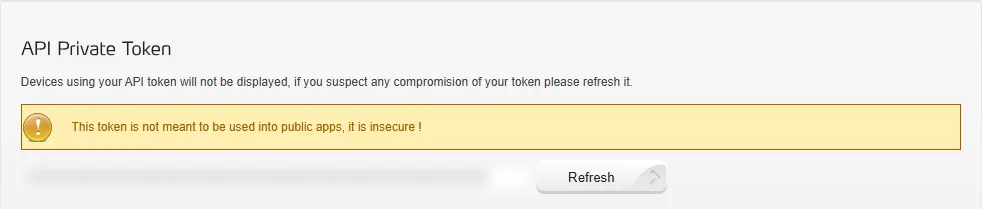
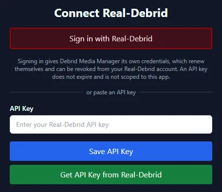

Real-Debrid API 令牌：去哪里获取以及报错是什么意思
您的 Real-Debrid API 令牌在 real-debrid.com/apitoken 页面上。登录 Real-Debrid，打开该页面，复制 API Private Token 下方的代码。把它粘贴到 DMM 或 zurg 中。如果某个应用显示 bad_token，说明它拿到的令牌有误或不完整：请重新从该页面复制一次。
获取你的令牌
- 在 real-debrid.com 登录。未登录时，令牌页面只会显示 403-Forbidden。
- 打开 real-debrid.com/apitoken。
- 复制 API Private Token 下的整段代码。它由 52 个大写字母和数字组成。

请把它当作密码来对待。它不会过期，任何拿到它的人都能使用你的整个账户。Real-Debrid 在该页面上的警告是：This token is not meant to be used into public apps, it is insecure !
该页面上的 Refresh 会生成一个新令牌。如果你觉得别人拿到了你的令牌，Real-Debrid 建议你这样做。刷新之后，把新令牌粘贴到所有之前使用旧令牌的应用中。
在 DMM 中填入令牌
- 在 debridmediamanager.com 上，点击 Login with Real Debrid。
- 在 or paste an API key 下方，把令牌粘贴到 API Key 中，然后点击 Save API Key。Get API Key from Real-Debrid 会直接为你打开令牌页面。

DMM 其实完全不需要这个令牌：Sign in with Real-Debrid 会显示一个代码，你只需在 real-debrid.com/device 上确认即可。这样 DMM 就有了自己的登录方式，而且会自动续期。更多内容请参阅 DMM 是什么，我该怎么用？
在 zurg 中填入令牌
在 config.yml 的 providers 下：
zurg: v1
providers:
- type: realdebrid
token: YOUR_RD_API_TOKEN或者在 zurg 的仪表盘 http://localhost:9999 中：打开 Config，在 Providers 下 realdebrid 那一行按 Edit，把令牌粘贴到 Token，然后按 Save。无论哪种方式，都要重启 zurg。Real-Debrid 与 zurg 里有其余内容，包括 Docker 的 TOKEN 设置。
要看看 zurg 对此怎么看：
curl -sS -X POST http://localhost:9999/api/providers/realdebrid/testReal-Debrid 拒绝的令牌会返回 account connection check failed; verify credentials and network。
自己检查令牌
curl -H "Authorization: Bearer YOUR_RD_API_TOKEN" https://api.real-debrid.com/rest/1.0/user在 Windows 上请输入 curl.exe 而不是 curl。令牌有效时会打印你的账户信息：username、"type": "premium" 和 expiration 日期。令牌无效时会打印：
{
"error": "bad_token",
"error_code": 8
}出现问题时
Real-Debrid 的错误都带有名称和编号。zurg 会同时显示两者，例如 bad_token (status code: 401) (code: 8)。
每个编号都列在 Real-Debrid 的 API 文档 底部。
常见问题
我的 Real-Debrid API 令牌在哪里找？
在你登录的状态下打开 real-debrid.com/apitoken。复制 API Private Token 下面的代码。
我的令牌在其他应用里能用，但 zurg 说无效，为什么？
你的账号只有一个 API token。很多应用根本不用它，而是通过验证码登录，比如 DMM 里的 Sign in with Real-Debrid。所以其他应用能正常工作，并不代表 zurg 用的 token 就是对的。请从 token 页面重新复制一次，粘贴到 zurg 里，前后不要带任何多余的字符，然后重启 zurg。
令牌会过期吗？
不，API token 没有过期日期。通过应用登录则不同：它会为该应用生成专属凭据，并且会自动续期。
把令牌交给插件或网站安全吗？
只把它交给你信任的应用。这个令牌可以打开你整个账户，而 Real-Debrid 明确表示它不是为公开应用准备的。如果应用提供用验证码登录的方式，请优先使用那种方式。